الأوتوستراد وتنظيم الحمولة وسحب المقطورات
الدليل الهندسي الشامل لقواعد الطرق السريعة وتنظيم الحمولة وسحب المركبات والمقطورات في كود السير الإيطالي: المركبات الممنوعة من دخول الأوتوستراد، قاعدة الـ 7 أمتار للحارات، حسابات بروز الحمولة الخلفية (30%) ولوحة التحذير Fig 302، والتمييز القاطع بين ألواح الشاحنات وألواح المقطورات.
⚡ استوديو الأوتوستراد وسحب المقطورات التفاعلي (Motorway & Towing Studio)
محاكاة فيزيائية في الوقت الفعلي (60 FPS) لقاعدة الـ 7 أمتار وحارات الأوتوستراد، مسافات المثلث الاضطراري، وحسابات وزن كرة السحب
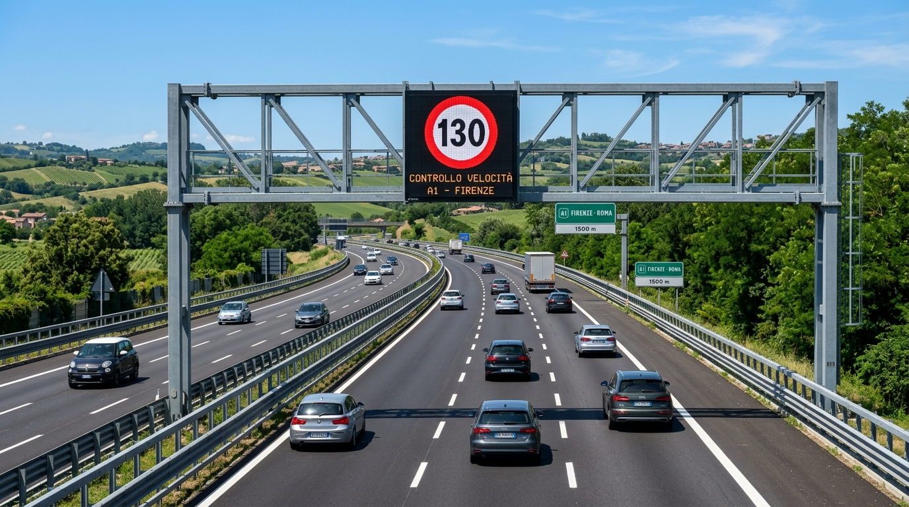
إشارة بداية طريق الأوتوستراد
- تشير لبدء سريان القواعد الخاصة بالأوتوستراد وتحدد السرعة القصوى بـ 130 كم/س للسيارات العادية.
- تلزم بالسير في الحارة الفارغة أقصى اليمين واستخدام الحارات الأخرى للتجاوز فقط.
- تمنع الرجوع للخلف، الدوران للخلف، السير في الاتجاه المعاكس، أو الوقوف خارج مناطق الخدمة.
- يزعم أن الإشارة تفرض حداً أدنى إجبارياً للسرعة مقداره 80 كم/س في كل الحارات (FALSO).
- يزعم جواز قيام السيارات بسحب سيارة أخرى معطلة بعد هذه الإشارة (ممنوع تماماً بالأوتوستراد).
سحب سيارة معطلة بسيارة خاصة ممنوع منعاً باتاً على الأوتوستراد، والسحب مسموح فقط لسيارات الإغاثة ونش الإنقاذ المرخصة (Soccorso Stradale)!
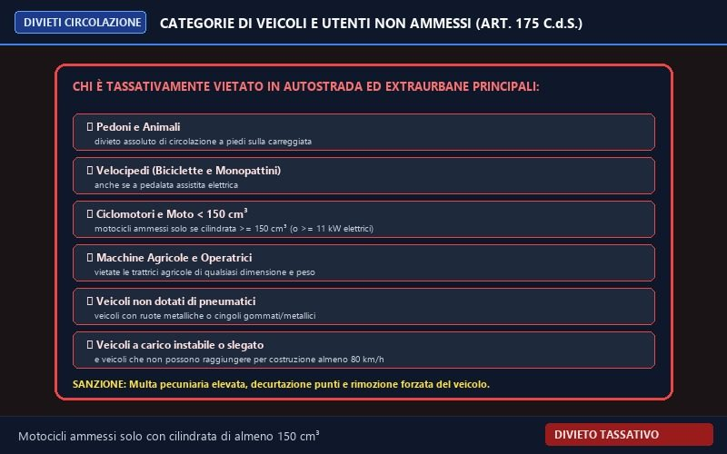
المركبات الممنوعة من دخول الأوتوستراد
- الدراجات النارية بسعة محرك أقل من 150 سم³ (Cilindrata inferiore a 150 cm³).
- الدراجات الهوائية، المشاة، والحيوانات، والدراجات ثلاثية العجلات الخفيفة.
- الآلات الزراعية والآلات الإنشائية، والمركبات التي لا تصل سرعتها في الخط المستقيم إلى 80 كم/س.
- يزعم منع سيارات السائقين الجدد (Neopatentati) من دخول الأوتوستراد (FALSO، يسمح لهم بسرعة 100 كم/س).
- يزعم منع الدراجات النارية ذات السعة 250 سم³ (FALSO، مسموح لها لأنها فوق 150 سم³).
الدراجات النارية 125 سم³ ممنوعة من الأوتوستراد، بينما 150 سم³ فما فوق مسموح لها تماماً!
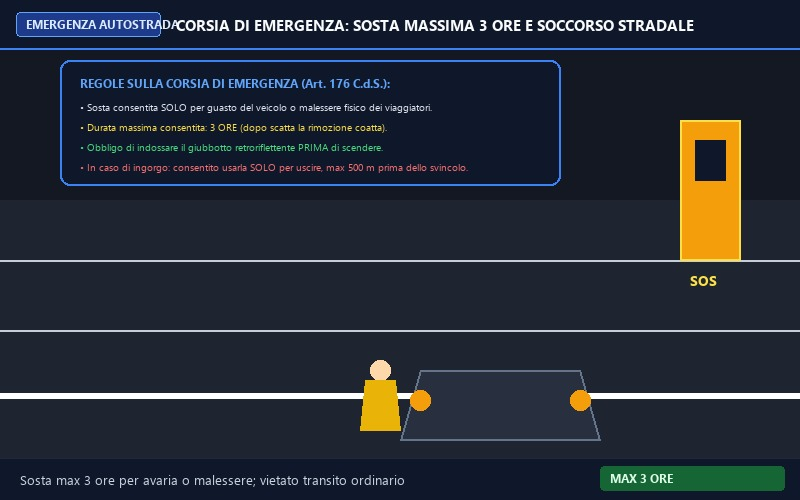
حارة الطوارئ ومحطات الخدمة
- حارة الطوارئ مخصصة فقط للتوقف الاضطراري (خلل ميكانيكي أو وعكة صحية طارئة) بحد أقصى 3 ساعات.
- يسمح بالسير فيها فقط للخروج إذا كانت المسافة للمخرج أقل من 500 متر في حال وجود ازدحام وطابور متوقف.
- في محطات الخدمة (Aree di servizio) يسمح بالركن بحد أقصى 24 ساعة متواصلة.
- يزعم جواز استخدام حارة الطوارئ لتجاوز الازدحام المروري العام (مخالفة جسيمة وسحب رخصة).
- يزعم السماح بالركن في حارة الطوارئ لأخذ قسط من النوم أو الراحة (FALSO، النوم يكون بمحطات الخدمة).
الحد الأقصى للتوقف بحارة الطوارئ هو 3 ساعات فقط، بينما الركن في محطة الخدمة والاستراحة مسموح حتى 24 ساعة!
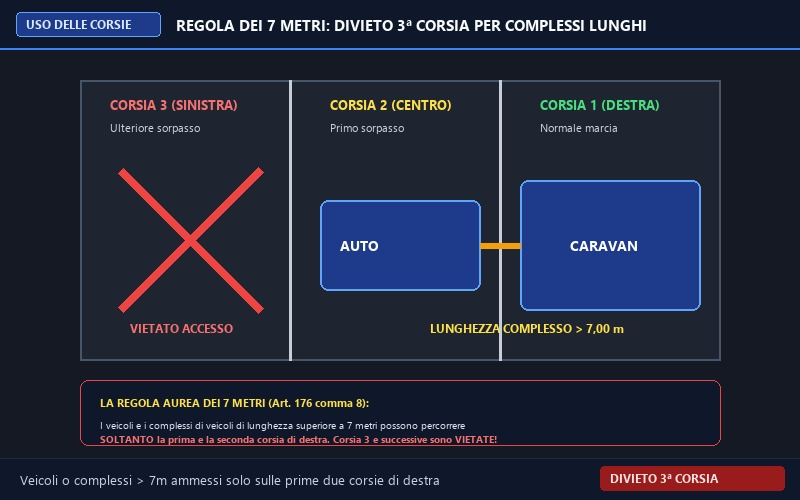
قاعدة الـ 7 أمتار واستخدام الحارات
- على الطرق ذات الثلاث حارات فأكثر لنفس الاتجاه: تُمنع قوافل المركبات والشاحنات التي يتجاوز طولها 7 أمتار من الحارة الثالثة (أقصى اليسار).
- يسمح لها فقط باستخدام الحارتين الأولى (اليمين) والثانية (الوسطى).
- يسري المنع أيضاً على الشاحنات ذات الوزن الإجمالي الممتلئ فوق 3.5 طن.
- يزعم أن قاعدة الـ 7 أمتار تطبق فقط إذا كان هناك 4 حارات (FALSO، تطبق فور وجود 3 حارات).
- يزعم السماح باستخدام الحارة الثالثة إذا كانت الحارتان الأولى والثانية ممتلئتين (FALSO).
طول يتجاوز 7 أمتار (سيارة + كرفان أو شاحنة) في طريق ذي 3 حارات = ممنوع تماماً من الحارة الثالثة أقصى اليسار!

لوحة بروز الحمولة الخلفية المربعة
- لوحة مربعة ذات خطوط مائلة بالتبادل بيضاء وحمراء عاكسة للضوء.
- توضع على كل حمولة تبرز خلف المركبة حتى ولو كان البروز قليلاً (مثلاً حامل الدراجات الخلفي).
- إذا امتد البروز بعرض مؤخرة المركبة بالكامل، يلزم تثبيت لوحتين (واحدة على اليمين وأخرى على اليسار بخطوط تكون شكل V مقلوب).
- يزعم استخدامها عند بروز الحمولة من الأمام (FALSO، البروز للأمام ممنوع تماماً إذا حجب الرؤية ولا توضع له هذه اللوحة).
- يزعم إمكانية استبدالها بقطعة قماش حمراء عادية في النهار (مخالفة صريحة لكود السير).
لوحة البروز Fig 302 إلزامية لأي بروز خلفي ولو كان بضعة سنتيمترات، وحامل الدراجات الخلفي يلزم وضع هذه اللوحة عليه دائماً!
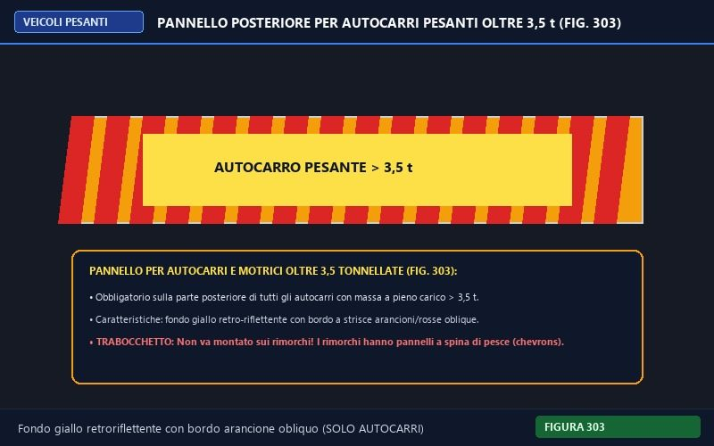
لوحة الشاحنات الأفقية بأكثر من 3.5 طن
- شريحتان أفقيتان بخطوط مائلة صفراء عاكسة وبرتقالية فلورية.
- تثبت على مؤخرة مركبات نقل البضائع (Autocarri) التي يتجاوز وزنها الإجمالي 3.5 طن.
- تسهل رؤية الشاحنة وتمييزها في الليل أو الظروف الجوية السيئة.
- يزعم تثبيتها على المقطورات أو الكارافان (FALSO، المقطورات لها لوحة Fig 305 بإطار أحمر).
- يزعم وضعها على الحافلات وسيارات الركوب العادية (FALSO، خاصة بشاحنات البضائع فوق 3.5 طن).
خطوط مائلة صفراء وبرتقالية = شاحنة بضائع فقط (Autocarro). إذا ذكر السؤال مقطورة (Rimorchio) فالإجابة حتماً FALSO!
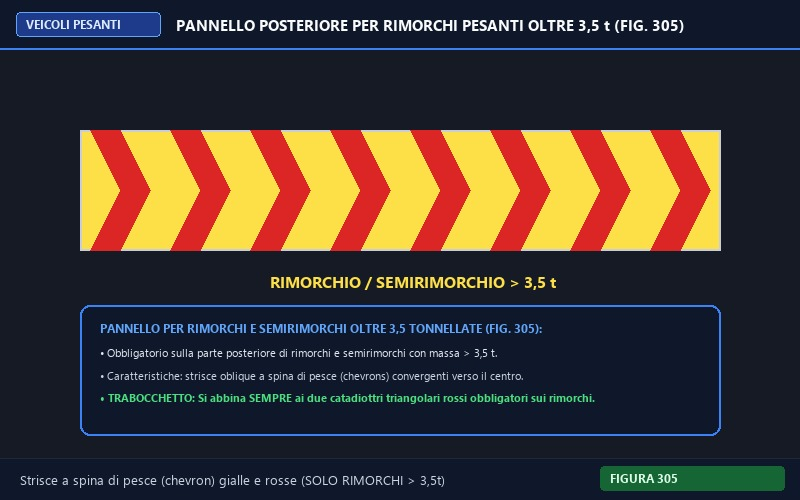
لوحة المقطورات بأكثر من 3.5 طن
- شريحتان بأرضية صفراء عاكسة محاطة بإطار أحمر فلوري كامل.
- تثبت على مؤخرة المقطورات ونصف المقطورات (Rimorchi e semirimorchi) التي يتجاوز وزنها 3.5 طن.
- الإطار الأحمر هو العلامة الدالة الحصرية للمقطورات في القانون الأوروبي والإيطالي.
- يزعم وضعها على الشاحنات الفردية غير المزوّدة بمقطورة (FALSO).
- يزعم تثبيتها على مقدمة القاطرة لتوضيح سحب مقطورة (FALSO، توضع بمؤخرة المقطورة فقط).
إطار أحمر وأرضية صفراء = مقطورة (Rimorchio). خطوط مائلة صفراء وبرتقالية = شاحنة (Autocarro). هذا أهم تمييز بصري في الباب!
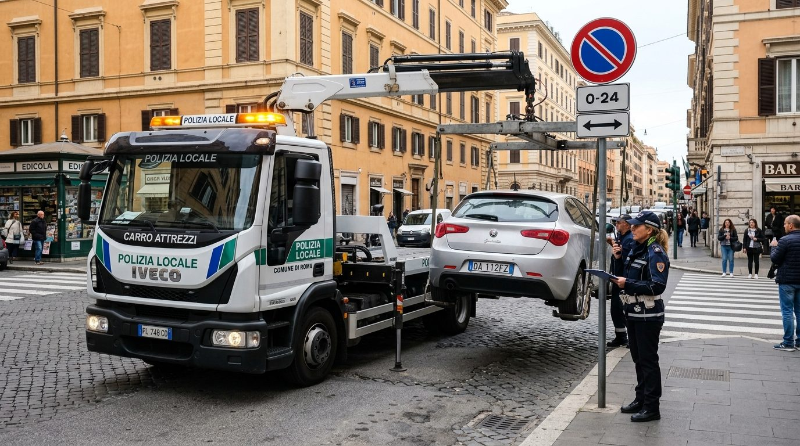
سحب المركبات المعطلة وقواعد الأمان
- على الطرق العادية: يجوز للسيارة سحب سيارة أخرى معطلة واحدة فقط باستخدام حبل متين أو كابل أو قضيب صلب (Barra rigida).
- يلزم وضع علامة واضحة على وسيلة السحب لتنبيه الآخرين، وتشغيل أضواء الخطر (4 Frecce) للمركبة المسحوبة.
- يمنع السحب نهائياً على الأوتوستراد والطرق السريعة الرئيسية إلا عبر سيارات الإنقاذ المرخصة.
- يزعم جواز قيام مركبة بسحب أكثر من مركبة معطلة في نفس الوقت (ممنوع تماماً).
- يزعم جواز السحب على الأوتوستراد إذا كانت المسافة لأقرب مخرج أقل من 5 كم (FALSO، ممنوع تماماً).
السحب الخاص بسيارتك مسموح فقط على الطرق العادية (Extraurbane secondarie / Urbane)، وممنوع منعاً باتاً على الأوتوستراد!
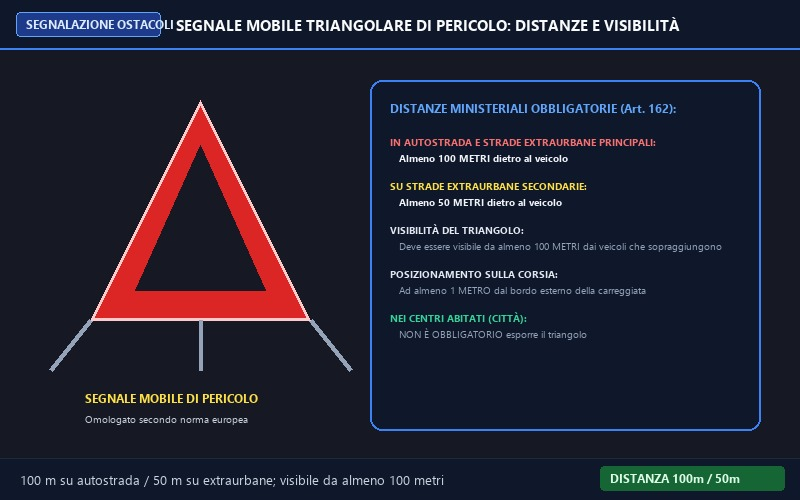
المثلث العاكس المتنقل لحالات الخطر والتوقف
- إلزامي في الأوتوستراد والطرق السريعة الرئيسية على بعد لا يقل عن 100 متر خلف المركبة المتوقفة.
- على الطرق الخارجية العادية (Extraurbane secondarie): يوضع على بعد لا يقل عن 50 متراً.
- يجب أن يكون مرئياً للسائقين القادمين من الخلف على مسافة لا تقل عن 100 متر.
- يوضع على نفس حارة السير للمركبة المتوقفة، وعلى مسافة متر واحد على الأقل من الحافة الخارجية للإسفلت.
- [FALSO] المثلث إلزامي دائماً عند التوقف العادي داخل المدن والمناطق السكنية.
- [FALSO] يكفي وضع المثلث على بعد 20 متراً فقط في الأوتوستراد إذا كانت الأنوار مضاءة.
أرقام الحفظ: 100 متر في الأوتوستراد، 50 متراً في الطرق الخارجية، والرؤية 100 متر دائماً. داخل المدن: غير إلزامي!
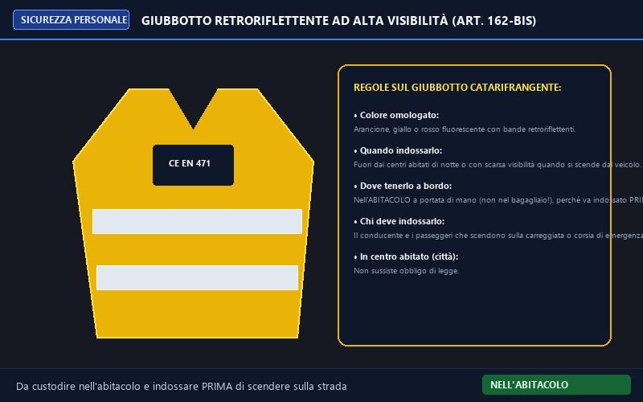
السترة العاكسة عالية الرؤية المعتمدة
- إلزامية الارتداء خارج المدن عند النزول من المركبة ليلاً أو في ظروف الرؤية المنخفضة أو لوضع المثلث.
- يجب الاحتفاظ بها داخل قمرة القيادة (Nell'abitacolo) لتكون في متناول اليد وارتدائها قبل وضع القدم على الطريق.
- معتمدة أوروبياً بشهادة CE EN 471 بلون أصفر أو برتقالي أو أحمر فسفوري بشرائح عاكسة.
- تسري العقوبة وسحب النقاط على السائق إذا ترجل على الطريق السريع بدون ارتدائها.
- [FALSO] يجب تخزين السترة العاكسة في شنطة السيارة الخلفية (Bagagliaio) مع العدة.
- [FALSO] السترة مطلوبة فقط لسائقي الشاحنات والحافلات واختيارية لقائدي سيارات الركاب.
فخ مكان السترة: السؤال الوزاري يزعم وضعها في الشنطة الخلفية (Nel bagagliaio). العبارة خطأ قطيعاً (FALSO) لأن فتح الشنطة يتطلب النزول أولاً، وهو ممنوع قبل لبسها!
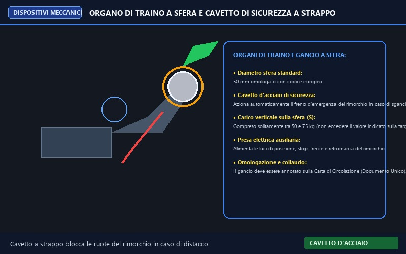
وصلة السحب بكرة الشد وكابل الأمان الفولاذي
- كرة السحب المعدنية بقطر قياسي 50 مم مع آلية إقفال محكمة تمنع تحرر ذراع المقطورة.
- كابل الفولاذ للأمان (Cavetto a strappo) يثبت بالهيكل ويقوم بفرملة المقطورة تلقائياً عند انقطاع الوصلة.
- يجب فحص ومراعاة أقصى حمل رأسي مسموح على الكرة (S) المسجل على لوحة البيانات (عادة 50-75 كجم).
- يجب توصيل القابس الكهربائي لتشغيل إشارات الانعطاف وأنوار التوقف واللوحة الخلفية للمقطورة.
- [FALSO] يمكن استبدال كابل أمان الفرملة بسلك حديدي خفيف أو حبل قماشي عادي.
- [FALSO] زيادة الحمل الرأسي على الكرة فوق 150 كجم يزيد ثبات السيارة ويحسن الفرامل.
الحمل الرأسي S: زيادة الحمل يثقل الخلفية ويرفع مقدمة السيارة فيضعف التوجيه، ونقصه يسبب ترنح المقطورة وتمايلها العنيف.
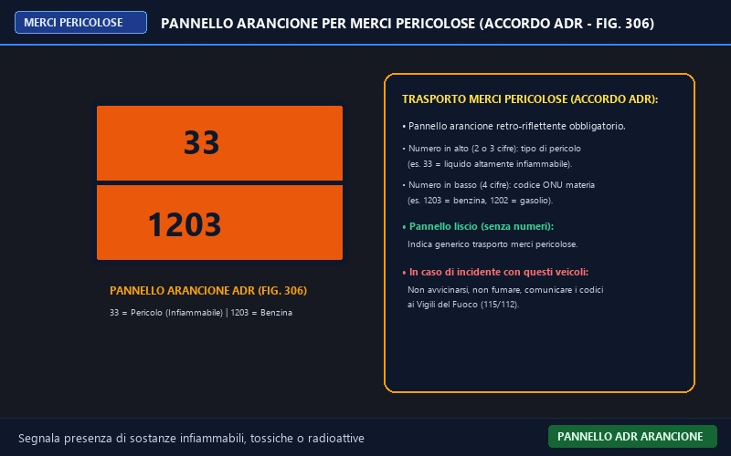
اللوح البرتقالي العاكس لنقل المواد الخطرة (ADR)
- لوح برتقالي عاكس ذو حافة سوداء يثبت في مقدمة ومؤخرة صهاريج وشاحنات نقل المواد الخطرة.
- الأرقام العلوية (رقم الخطر): تدل على نوع الخطر (مثل 33: سائل شديد الاشتعال).
- الأرقام السفلية (كود الأمم المتحدة UN): تحدد المادة المنقولة بدقة (مثل 1203: بنزين، 1202: سولار).
- اللوح الأملس (بدون أرقام): يشير إلى نقل عام لمواد خطرة معبأة في طرود أو براميل.
- [FALSO] اللوح البرتقالي مخصص للشاحنات التي يتجاوز وزنها 3.5 طن محملة بأي بضاعة عادية.
- [FALSO] الأرقام العلوية تشير إلى السرعة القصوى المسموحة للشاحنة على الأوتوستراد.
في الحوادث: عند وقوع حادث مع شاحنة تحمل هذا اللوح، يجب إبلاغ الدفاع المدني فوراً بالأرقام المكتوبة على اللوح وعدم الاقتراب منها!
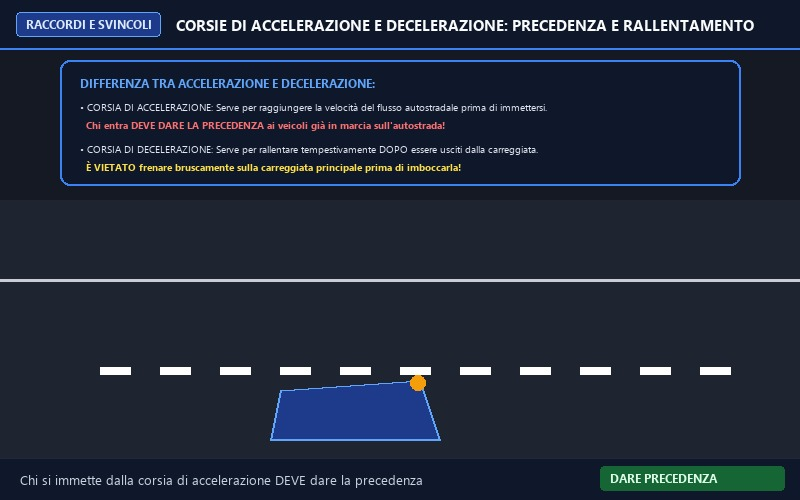
حارات التسارع والتباطؤ ومداخل ومخارج الأوتوستراد
- حارة التسارع (Accelerazione): مخصصة للتسارع للوصول لسرعة السير المناسبة قبل الاندماج في الحركة.
- السائق المندمج من حارة التسارع ملزم بإعطاء الأسبقية (Dare la precedenza) للمركبات على الطريق السريع.
- حارة التباطؤ (Decelerazione): مخصصة للفرملة وتخفيض السرعة بعد مغادرة الحارة الرئيسية وليس قبلها.
- يفصل بينها وبين الطريق خط متقطع عريض، ويحظر التوقف أو الرجوع للخلف فيها تماماً.
- [FALSO] يحق للسائق القادم من حارة التسارع إجبار المركبات على التوقف أو تغيير مسارها لإفساح الطريق له.
- [FALSO] حارة التباطؤ تستخدم لتجاوز السيارات البطيئة من اليمين.
أسبقية الدخول: القادم من حارة التسارع لا يملك الأسبقية أبداً، ويجب عليه مراقبة المرآة وإعطاء الأسبقية لحركة المرور السريعة.
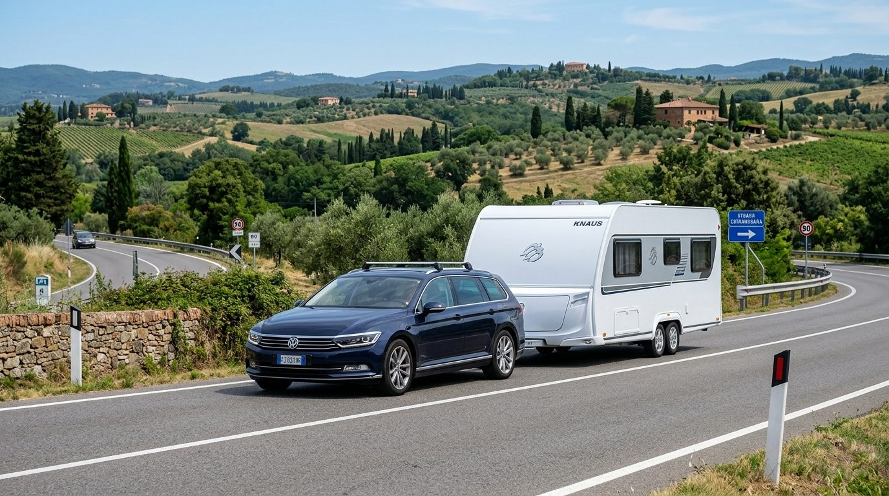
ديناميكا وثبات سحب المقطورات والكرفانات
- مسافة الفرملة تتضاعف وتزداد بشكل ملحوظ بسبب القصور الذاتي والكتلة الزائدة للمقطورة المسحوبة.
- المقطورات العريضة والكرفان شديدة التأثر بالرياح الجانبية على الجسور والكباري المرتفعة وعند الخروج من الأنفاق.
- في المنحنيات الضيقة: المقطورة تسير في مسار أكثر ضيقاً نحو الداخل مقارنة بالسيارة القاطرة.
- عند ترنح المقطورة وتمايلها (Sbandamento): يجب عدم الفرملة المفاجئة، بل تهدئة السرعة وتثبيت المقود.
- [FALSO] سحب الكرفان لا يغير من مسافة الأمان ويمكن الاحتفاظ بنفس المسافة المعتادة.
- [FALSO] يمكن نقل أشخاص داخل الكرفان أو الرولوت أثناء سيرها على الطريق السريع.
ممنوع الركاب داخل الكرفان: يحظر تماماً تواجد أي شخص داخل المقطورة السكنية (Caravan) أثناء السير، والركاب فقط في السيارة القاطرة!
بوابات الأوتوستراد، أعمدة الطوارئ، وتجهيزات سحب المقطورات المعتمدة
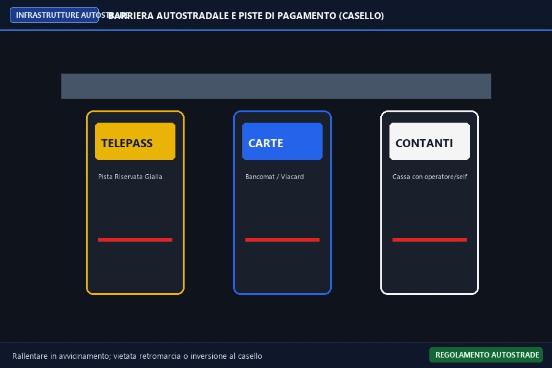
بوابات التحصيلبوابة رسوم الأوتوستراد ومسارات الدفع (Casello)
المسارات المعتمدة لبوابات الدفع؛ المسار الأصفر لـ Telepass بدون توقف، والمسار الأزرق لبطاقات الائتمان، ومسار الكاش باللون الأبيض.
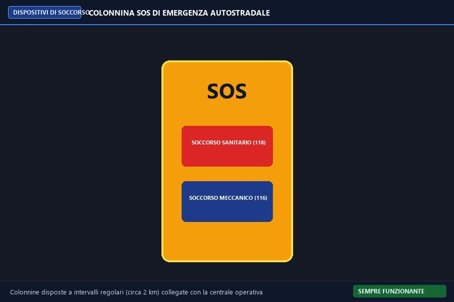
صندوق الإسعافعمود الطوارئ والاتصال اللاسلكي (Colonnina SOS)
أعمدة الاستغاثة الصفراء المنتشرة كل 2 كم على جانبي الأوتوستراد؛ تضم زراً لطلب الونش الميكانيكي وزراً لطلب الإسعاف الطبي مع تحديد الموقع آلياً.
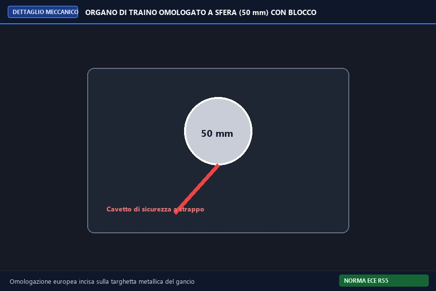
وصلة السحب الصلبةآلية إقفال كرة السحب وكابل الفرملة التلقائية
رأس القطر المعدني المعتمد بقطر 50 مم مع مقبض الأمان ذي المؤشر الأخضر، موصولاً بكابل الصلب الأحمر الذي يفعل فرامل المقطورة عند الطوارئ.
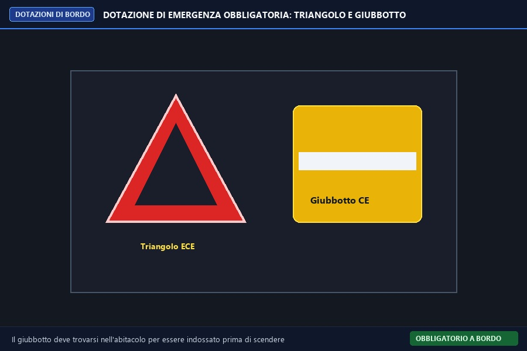
حقيبة الأمان الإلزاميةطقم الطوارئ الإلزامي بالمركبة (المثلث والسترة)
المثلث العاكس ذو الأرجل المعدنية القابلة للطي، مع السترة الفسفورية عالية الانعكاس التي يجب حفظها داخل كابينة السيارة وليس بالشنطة الخلفية.
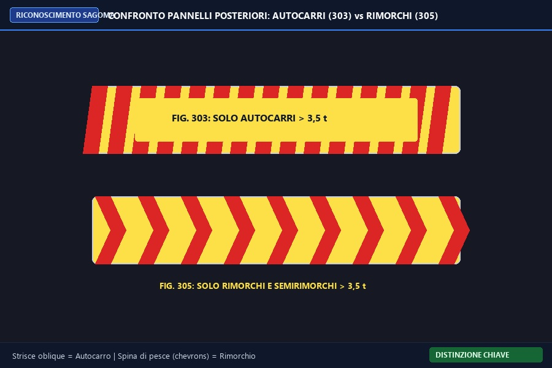
تمييز الشاحنة والمقطورةمقارنة ألواح الشاحنات (303) وألواح المقطورات (305)
التمييز البصري الحاسم للامتحان الوزاري: اللوح ذو الخطوط المائلة للشاحنة الفردية، واللوح ذو رأس السهم المتداخل (Spina di pesce) للمقطورة فقط.
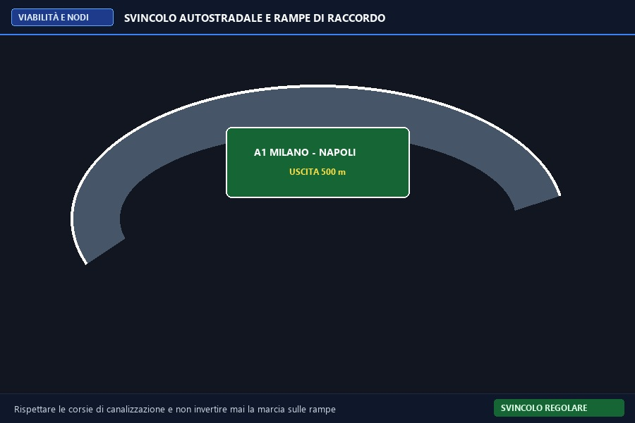
التقاطعات الحرةالمنحدرات التبادلية وحارات التسارع (Svincolo)
التصميم الهندسي المتطور لمخارج ومداخل الأوتوستراد بطوابق منفصلة علوية وسفلية تمنع أي تقاطع مباشر وتضمن انسياب حركة السير بسرعة 130 كم/س.
فخاخ الامتحان الوزاري الحاسمة في الباب 17 (Trabocchetti Ministeriali)
أخطر الأسئلة الوزارية المخادعة في الأوتوستراد والحمولة وسحب المقطورات
"In autostrada è consentito fare inversione di marcia in corrispondenza dei varchi dello spartitraffico in caso di errore di corsia"
«في الأوتوستراد يجوز الدوران للخلف (U-turn) عند فتحات الحاجز الأوسط في حال الخطأ في المسار»
"La corsia di emergenza in autostrada può essere utilizzata per la sosta fino a un massimo di 3 ore in caso di malessere o guasto"
«يجوز استخدام حارة الطوارئ في الأوتوستراد للوقوف لمدة أقصاها 3 ساعات في حالة الوعكة الصحية أو العطل»
"I veicoli o complessi di veicoli di lunghezza superiore a 7 metri possono impegnare qualsiasi corsia in un'autostrada a tre o più corsie"
«يجوز للمركبات أو قاطرات المركبات التي يتجاوز طولها 7 أمتار استخدام أي حارة في أوتوستراد بثلاث حارات أو أكثر»
"Il carico può sporgere anteriormente dalla sagoma del veicolo fino a 3/10 della lunghezza del veicolo stesso"
«يجوز للحمولة أن تبرز من الأمام عن هيكل السيارة حتى 3 أعشار طول السيارة»
"Il pannello per carichi sporgenti deve essere applicato solo di notte o in caso di scarsa visibilità"
«لوحة الحمولة البارزة يجب وضعها ليلاً فقط أو في حالات ضعف الرؤية»
"Il traino di un veicolo in avaria sull'autostrada è consentito purché si utilizzi una fune o una catena robusta e ben segnalata"
«يسمح بسحب سيارة معطلة في الأوتوستراد بشرط استخدام حبل أو جنزير قوي وواضح الإشارة»
"La patente della categoria B abilita a guidare autoveicoli trainanti un rimorchio non leggero (superiore a 750 kg), purché la massa massima autorizzata del complesso non superi 3.500 kg"
«تتيح رخصة B قيادة سيارة تجر مقطورة غير خفيفة (أكثر من 750 كجم) بشرط ألا يتجاوز الوزن الإجمالي الكلي 3500 كجم»
"Il codice armonizzato 96 sulla patente B consente di condurre complessi di veicoli con massa massima compresa tra 3.500 kg e 4.250 kg superando una prova pratica di guida"
«يتيح الكود 96 على رخصة B قيادة قواطر سيارات بوزن كلي بين 3500 و 4250 كجم بعد اجتياز اختبار قيادة عملي»
"È consentito circolare in autostrada con motocicli aventi cilindrata di 125 cm3 se guidati da conducenti maggiorenni"
«يسمح بالسير في الأوتوستراد بالدراجات النارية سعة 125 سم مكعب إذا كان السائق بالغاً»
"Il cavetto di sicurezza in acciaio collegato al gancio di traino attiva automaticamente la frenatura del rimorchio in caso di distacco accidentale"
«يقوم سلك الأمان الفولاذي المتصل بكرة السحب بتفعيل فرامل المقطورة تلقائياً في حال انفصالها العرضي»
"I rimorchi per trasporto di attrezzature turistiche e sportive (T.A.T.S.) possono essere utilizzati per il trasporto di merci commerciali generiche"
«مقطورات المعدات الرياضية والسياحية T.A.T.S. يجوز استخدامها لنقل بضائع تجارية عامة»
"Il segnale mobile di pericolo (triangolo) deve essere posizionato in modo da essere visibile da almeno 100 metri dai conducenti che sopraggiungono"
«يجب وضع مثلث الخطر بحيث يكون مرئياً من مسافة 100 متر على الأقل للسائقين القادمين خلفه»